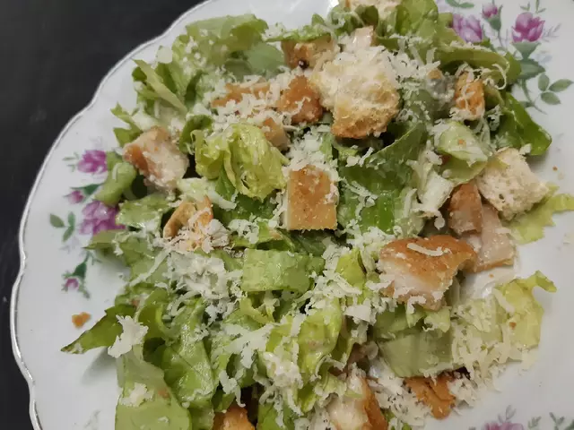
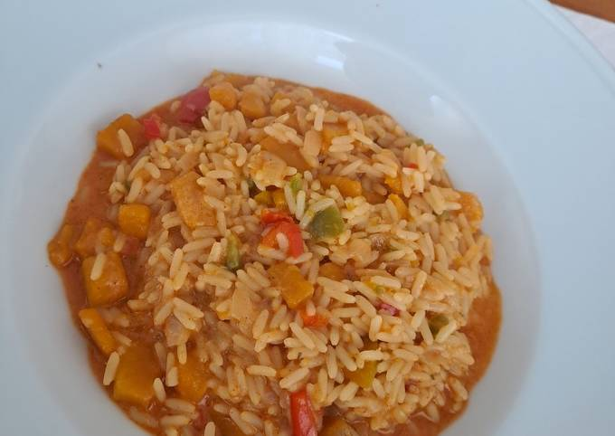

Ensalada César
Ingredientes
- 1 planta de lechuga
- 4 milanesas de pollo
- 4 panes fugasa
- Queso para rallar
- Aceite de oliva
- Paso a paso
- Paso 1:
Lavamos la lechuga la cortamos y reservamos
- Paso 2:
Cortamos el pan en cuadraditos
- Paso 3:
Le ponemos aceite de oliva a los panes y los ponemos a tostar al horno hasta que queden dorados y reservamos
- Paso 4:
Cocinamos las milanesas de pollo y cortamos en pequeños cuadraditos y reservamos
- Paso 5:
Cuando ya esté por servirse mezclamos todo
- Paso 6:
Se le agrega la salsa caesar comprada o casera, el queso rallado y a disfrutar

Guiso arroz
Ingredientes
- 1 taza arroz
- Verduras a elección: calabaza, zanahoria, batata
- 250 gr Carne para guiso (puede ser cuadril, paleta, roast beef)
- 1 papa grande
- 1/2 morrón rojo
- 1 lata de arvejas
- 1 caja puré de tomate
- Agua (cantidad necesaria)
- Condimentos: pimentón y ají molido
- 1 cebolla grande
- Paso a paso
- Paso 1:
El primer paso es cortar todo: picar cebolla y morrón, cortar la papa en cubos y cortar la carne en trozos pequeños
- Paso 2:
Calentar una olla mediana con un poco de aceite y una vez caliente, echar primero la cebolla. Una vez que esté transparente, echar el morrón.
- Paso 3:
Una vez que esté cocido, echar los trozos de carne. Cuando la carne esté sellada, agregar las arvejas y el puré de tomate. Agregar también los condimentos.
- Paso 4:
Aparte, hervir agua (aproximadamente medio litro) y echarla a la preparación anterior hasta cubrirla. Agregar 1 taza de arroz y las verduras en cubos.
- Paso 5:
Revolver, agregar sal y tapar la preparación. Debe quedar cubierta de agua ya que es lo que van a necesitar el arroz y las verduras para cocinarse.
- Paso 6:
Ir revolviendo hasta que el agua ya se haya absorbido y el arroz y las verduras estén cocidos. Si hace falta agregar agua, agregar, se absorbe rápido. Servir con queso rallado, pancito y recomiendo un buen vino tinto